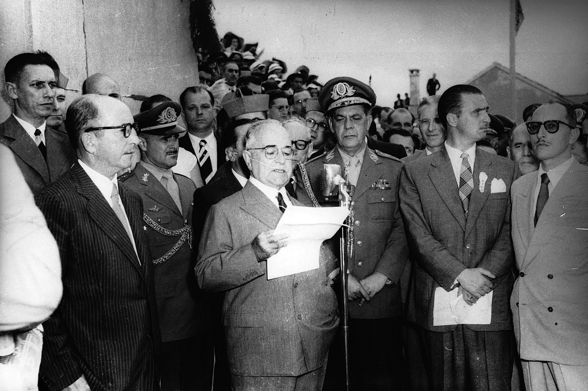

Era Vargas
A Era Vargas é a fase da história brasileira em que Getúlio Vargas governou o país de 1930 a 1945. Foi forçado a
renunciar à presidência após um ultimato dos militares.
Era Vargas foi um período iniciado em 1930, logo após a Revolução de 1930, e finalizado em 1945 com a deposição
de Getúlio Vargas. Nesse período da história brasileira, o poder esteve centralizado em Getúlio Vargas, que
assumiu como presidente do Brasil após o movimento que depôs Washington Luís da presidência.
Resumo sobre a Era Vargas
A Era Vargas foi o período de quinze anos da história brasileira que se estendeu de 1930 a 1945 e no qual
Getúlio Vargas era o presidente do país. A ascensão de Vargas ao poder foi resultado direto da Revolução de
1930, que destituiu Washington Luís e impediu a posse de Júlio Prestes (presidente eleito que assumiria o
país).
Ao longo desse período, Getúlio Vargas procurou centralizar o poder. Muitos historiadores, inclusive, entendem
o período 1930-1937 como a “gestação” da ditadura de Vargas. Vargas também ficou marcado pela sua aproximação
com as massas, característica que se tornou muito marcante durante o Estado Novo."
Permaneceu no poder até 1945, quando foi forçado a renunciar à presidência por causa de um ultimato dos
militares. Com a saída de Vargas do poder, foi organizada uma nova Constituição para o país e iniciada outra
fase da nossa história: a Quarta República (1946-1964).
Transição de poder

A ascensão de Getúlio Dornelles Vargas à presidência aconteceu pela implosão do modelo político que existia no
Brasil durante a Primeira República. Ao longo da década de 1920, inúmeras críticas foram feitas ao sistema
oligárquico que vigorava em nosso país, sendo os tenentistas um dos movimentos de oposição de maior
destaque.
A implosão da Primeira República concretizou-se de fato durante a eleição de 1930. Nessa eleição, a oligarquia
mineira rompeu abertamente com a oligarquia paulista porque o presidente Washington Luís recusou-se a indicar um
candidato mineiro para concorrer ao cargo. A indicação para presidente foi do paulista Júlio Prestes.
Isso desagradou profundamente à oligarquia mineira, uma vez que a atitude do presidente rompia com o acordo
existente entre as duas oligarquias (Política do Café com Leite). Assim, os mineiros passaram a conspirar contra
o governo e, aliando-se às oligarquias paraibana e gaúcha, optaram por lançar um candidato para concorrer à
presidência: Getúlio Vargas.
A disputa eleitoral travada entre Júlio Prestes e Getúlio Vargas teve como desfecho a vitória do primeiro. No
entanto, mesmo derrotados, membros da chapa eleitoral de Vargas (chamada Aliança Liberal) começaram a conspirar
para destituir Washington Luís do poder (Vargas, porém, havia aceitado a derrota).
Essa conspiração tornou-se rebelião de fato quando João Pessoa, vice de Getúlio Vargas, foi assassinado em
Recife por João Dantas. O assassinato de João Pessoa não tinha nenhuma relação com a eleição disputada, mas o
acontecido foi utilizado como pretexto para que um levante militar contra Washington Luís fosse
iniciado.
A revolta iniciou-se em 3 de outubro de 1930 e estendeu-se por três semanas. No dia 24 de outubro de 1930, o
presidente Washington Luís foi deposto da presidência. Uma junta militar governou o Brasil durante 10 dias e, em
3 de novembro de 1930, Getúlio Vargas, que aderiu à rebelião quando ela estava em curso, assumiu a presidência
do Brasil.
-
Governo Provisório (1930-34)
O governo provisório, como o próprio nome sugere, deveria ter sido uma fase de transição em que Vargas
rapidamente organizaria uma Assembleia Constituinte para elaborar uma nova Constituição para o Brasil. Getúlio
Vargas, porém, nesse momento, já deu mostras da sua habilidade de se sustentar no poder, pois adiou o quanto foi
possível a realização da Constituinte.
Nessa fase, Vargas já realizou as primeiras medidas de centralização do poder e, assim, dissolveu o Congresso
Nacional, por exemplo. A demora de Vargas em realizar eleições e convocar uma Constituinte teve impactos em
alguns locais do país, como São Paulo, que se rebelou contra o governo em 1932 no que ficou conhecido como
Revolução Constitucionalista de 1932.
O movimento foi um fracasso e, após a sua derrota, Getúlio Vargas atendeu as demandas dos paulistas, nomeando
para o estado um interventor (governador) civil e nascido em São Paulo, além de garantir a realização de uma
eleição em 1933 para compor a Constituinte. Dessa Constituinte, foi promulgada a Constituição de 1934.
A nova Constituição foi considerada bastante moderna para a época e trouxe novidades, como o sufrágio universal
feminino (confirmando o que já havia sido estipulado pelo Código Eleitoral de 1932). Junto da promulgação da
nova Constituição, Vargas foi reeleito indiretamente para ser presidente brasileiro entre 1934 e 1938. Após
isio, um novo presidente deveria ser eleito.
Nessa fase, a política econômica de Vargas concentrou-se em combater os efeitos da Crise de 1929 no Brasil.
Para isso, agiu comprando milhares de sacas de café e incendiando-as como forma de valorizar o principal produto
da nossa economia. Nas questões trabalhistas, autorizou a criação do Ministério do Trabalho em 1930 e começou a
intervir diretamente na atuação dos sindicatos.
-
Governo Constitucional (1934-37)
Na fase constitucional, o governo de Vargas, em teoria, estender-se-ia até 1938, pois o presidente não poderia
concorrer à reeleição. No entanto, a política brasileira como um todo – o próprio Vargas, inclusive – caminhava
para a radicalização. Assim, surgiram grupos que expressavam essa radicalização do nosso país.
-
Ação Integralista Brasileira (AIB): grupo de extrema-direita que surgiu em São Paulo em
1932. Esse grupo possuía inspiração no fascismo italiano, expressando valores nacionalistas e até mesmo
antissemitas. Tinha como líder Plínio Salgado.
-
Aliança Libertadora Nacional (ANL): grupo de orientação comunista que surgiu como
frente de luta antifascista no Brasil e converteu-se em um movimento que buscava tomar o poder do país
pela via revolucionária. O grande líder desse grupo era Luís Carlos Prestes.
A ANL, inclusive, foi a responsável por uma tentativa de tomada do poder aqui no Brasil em 1935. Esse movimento
ficou conhecido como Intentona Comunista e foi deflagrado em três cidades (Rio de Janeiro, Natal e Recife), mas
foi um fracasso completo. Após a Intentona Comunista, Getúlio Vargas ampliou as medidas centralizadoras e
autoritárias, o que resultou no Estado Novo.
Essa fase constitucional da Era Vargas estendeu-se até novembro de 1937, quando Getúlio Vargas realizou um
autogolpe, cancelou a eleição de 1938 e instalou um regime ditatorial no país. O golpe do Estado Novo teve como
pretexto a divulgação de um documento falso conhecido como Plano Cohen. Esse documento falava sobre uma
conspiração comunista que estava em curso no país.
O Estado Novo foi a fase ditatorial da Era Vargas e estendeu-se por oito anos. Nesse período, Vargas reforçou o
seu
poder, reduziu as liberdades civis e implantou a censura. Também foi o período de intensa propaganda política e
um
momento em que Vargas estabeleceu sua política de aproximação das massas.
No campo político, Vargas governou a partir de decretos-leis, ou seja, as determinações de Vargas não precisavam
de
aprovação do Legislativo, pois já possuíam força de lei. O Legislativo, por sua vez, foi suprimido e, assim, o
Congresso e as Assembleias Estaduais e Câmaras Municipais foram fechadas. Todos os partidos políticos foram
fechados
e colocados na ilegalidade.
A censura instituída ficou a cargo do Departamento de Imprensa e Propaganda (DIP), responsável por censurar as
opiniões contrárias ao governo e produzir a propaganda que ressaltava o regime e o líder. Para fazer a
propaganda do
governo, foi criado um jornal diário na rádio chamado “A Hora do Brasil”.
Durante esse período, também se destacou a política trabalhista, destacando-se a criação do salário-mínimo
(1940) e
Consolidação das Leis do Trabalho (CLT) em 1943. Os sindicatos passaram para o controle do Estado.
A participação brasileira na Segunda Guerra e o desgaste desse projeto político autoritário enfraqueceram o
Estado
Novo perante a sociedade. Assim demandas por novas eleições começaram a acontecer. Pressionado, Vargas decretou
para
o fim de 1945 a realização de eleição presidencial e, em outubro desse mesmo ano, foi deposto do poder pelos
militares.